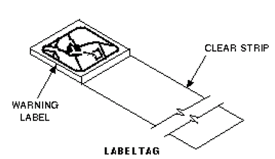
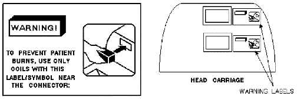

Operating Documentation
Direction 5133315-3, Rev# 14
Signa EXCITE HD 1.5T Service Methods
Module Version 1.0, Version Date 5/3/07
Operating Documentation |
| NOTE: | The Surface Coil UFI-compatibility issue and warning labels plan do NOT apply to 1.0T Signa Horizon systems. |
With the purchase or upgrade of a 1.5T Horizon, HiSpeed, or EchoSpeed, there are several RF coils that will no longer be compatible with the Signa Horizon system. It is required that these non-compatible coils be removed from the site and returned to GE. A new coil of the same type will be supplied for each of these non-compatibile coils before they are removed from the site. This will be accomplished by a marketing promotion, special no-cost S-CATs, or an FMI.
All new and existing surface coils that are compatible with Signa Horizon have a warning tag applied to the coil cable, near the cable connector and, for some coils, a warning tag applied to the cable of the coil next to the coil housing (see Illustration 1).
Illustration 1: SIGNA HORIZON SURFACE COIL WARNING TAG

Also, all Signa Horizon Head Carriages have a warning label, to the right of each of the surface coil and phased array connectors, which states, "WARNING! TO PREVENT PATIENT BURNS, USE ONLY COILS WITH THIS LABEL/SYMBOL NEAR THE CONNECTOR." (see Illustration 2). These warning labels are available English, French, Spanish, German, Italian, Portuguese, Japanese, and Chinese. (English language labels are on the delivered Signa Horizon Head Carriage.
Illustration 2: SIGNA HORIZON SURFACE COIL WARNING LABEL

For non-GE-approved surface coils: Refer the customer to the original coil manufacturer for information on coil compatibility with Signa Horizon.
| NOTE: | GE makes no claims as to compatibility of coils not approved by GE for use on Signa systems. We have no way of knowing if these non-GE coils are compatible with our software and/or hardware. The customer uses these coils at their own risk, and GE accepts no responsibility for their use. |